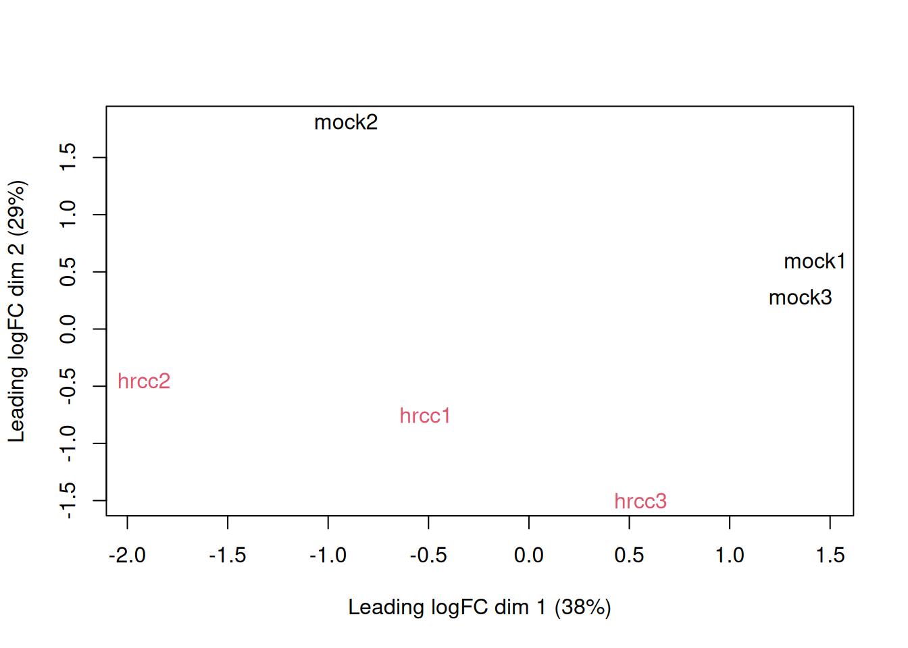
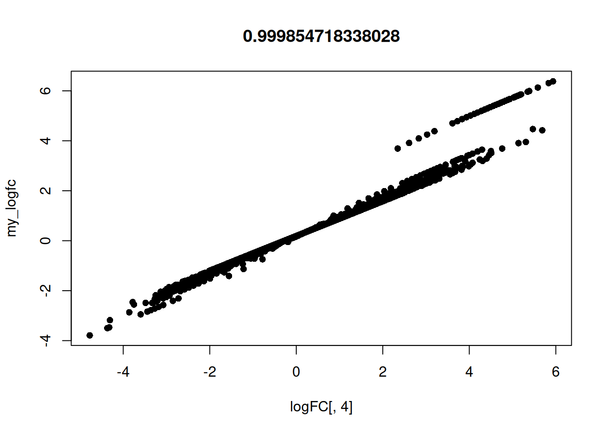
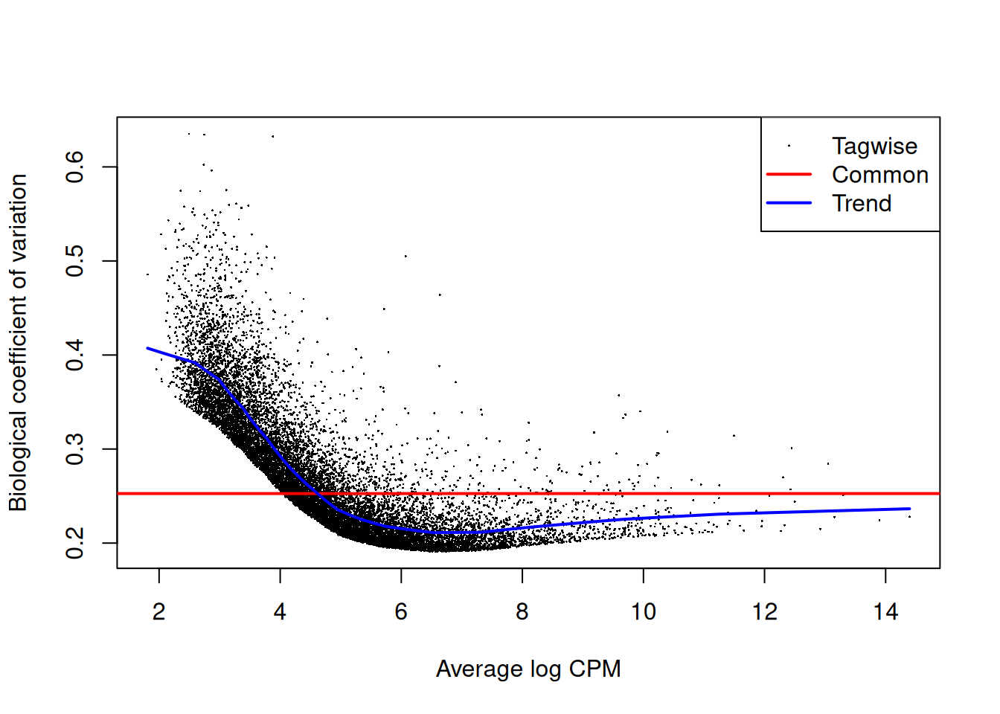
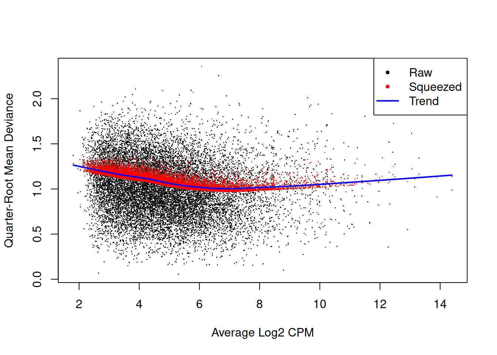
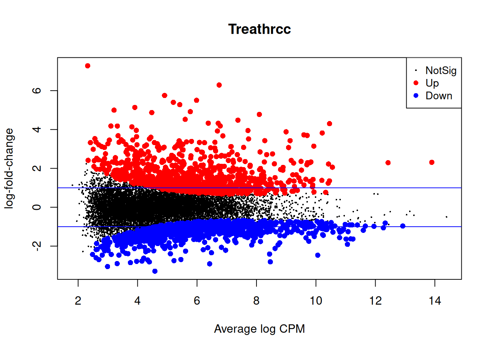
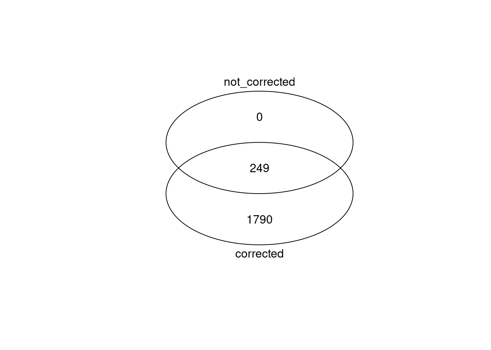
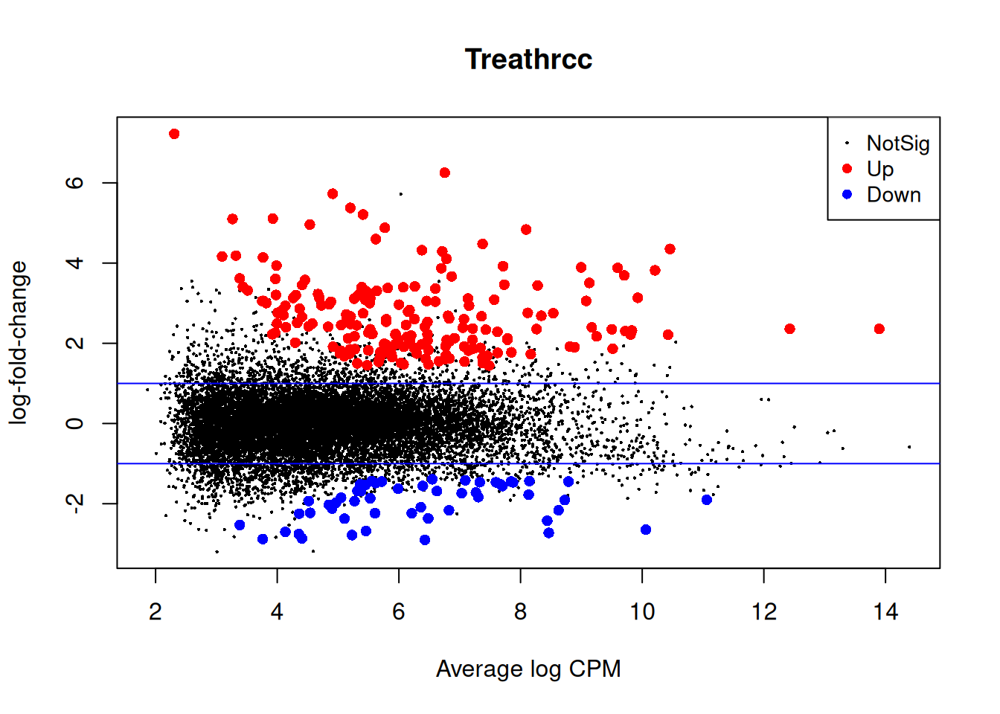

Last updated: 2025-07-08
Checks: 7 0
Knit directory: muse/
This reproducible R Markdown analysis was created with workflowr (version 1.7.1). The Checks tab describes the reproducibility checks that were applied when the results were created. The Past versions tab lists the development history.
Great! Since the R Markdown file has been committed to the Git repository, you know the exact version of the code that produced these results.
Great job! The global environment was empty. Objects defined in the global environment can affect the analysis in your R Markdown file in unknown ways. For reproduciblity it’s best to always run the code in an empty environment.
The command set.seed(20200712) was run prior to running
the code in the R Markdown file. Setting a seed ensures that any results
that rely on randomness, e.g. subsampling or permutations, are
reproducible.
Great job! Recording the operating system, R version, and package versions is critical for reproducibility.
Nice! There were no cached chunks for this analysis, so you can be confident that you successfully produced the results during this run.
Great job! Using relative paths to the files within your workflowr project makes it easier to run your code on other machines.
Great! You are using Git for version control. Tracking code development and connecting the code version to the results is critical for reproducibility.
The results in this page were generated with repository version 9ceb475. See the Past versions tab to see a history of the changes made to the R Markdown and HTML files.
Note that you need to be careful to ensure that all relevant files for
the analysis have been committed to Git prior to generating the results
(you can use wflow_publish or
wflow_git_commit). workflowr only checks the R Markdown
file, but you know if there are other scripts or data files that it
depends on. Below is the status of the Git repository when the results
were generated:
Ignored files:
Ignored: .Rproj.user/
Ignored: data/1M_neurons_filtered_gene_bc_matrices_h5.h5
Ignored: data/293t/
Ignored: data/293t_3t3_filtered_gene_bc_matrices.tar.gz
Ignored: data/293t_filtered_gene_bc_matrices.tar.gz
Ignored: data/5k_Human_Donor1_PBMC_3p_gem-x_5k_Human_Donor1_PBMC_3p_gem-x_count_sample_filtered_feature_bc_matrix.h5
Ignored: data/5k_Human_Donor2_PBMC_3p_gem-x_5k_Human_Donor2_PBMC_3p_gem-x_count_sample_filtered_feature_bc_matrix.h5
Ignored: data/5k_Human_Donor3_PBMC_3p_gem-x_5k_Human_Donor3_PBMC_3p_gem-x_count_sample_filtered_feature_bc_matrix.h5
Ignored: data/5k_Human_Donor4_PBMC_3p_gem-x_5k_Human_Donor4_PBMC_3p_gem-x_count_sample_filtered_feature_bc_matrix.h5
Ignored: data/97516b79-8d08-46a6-b329-5d0a25b0be98.h5ad
Ignored: data/Parent_SC3v3_Human_Glioblastoma_filtered_feature_bc_matrix.tar.gz
Ignored: data/brain_counts/
Ignored: data/cl.obo
Ignored: data/cl.owl
Ignored: data/jurkat/
Ignored: data/jurkat:293t_50:50_filtered_gene_bc_matrices.tar.gz
Ignored: data/jurkat_293t/
Ignored: data/jurkat_filtered_gene_bc_matrices.tar.gz
Ignored: data/pbmc20k/
Ignored: data/pbmc20k_seurat/
Ignored: data/pbmc3k.h5ad
Ignored: data/pbmc3k/
Ignored: data/pbmc3k_bpcells_mat/
Ignored: data/pbmc3k_export.mtx
Ignored: data/pbmc3k_matrix.mtx
Ignored: data/pbmc3k_seurat.rds
Ignored: data/pbmc4k_filtered_gene_bc_matrices.tar.gz
Ignored: data/pbmc_1k_v3_filtered_feature_bc_matrix.h5
Ignored: data/pbmc_1k_v3_raw_feature_bc_matrix.h5
Ignored: data/refdata-gex-GRCh38-2020-A.tar.gz
Ignored: data/seurat_1m_neuron.rds
Ignored: data/t_3k_filtered_gene_bc_matrices.tar.gz
Ignored: r_packages_4.4.1/
Ignored: r_packages_4.5.0/
Untracked files:
Untracked: Caenorhabditis_elegans.WBcel235.113.gtf.gz
Untracked: Nothobranchius_furzeri.Nfu_20140520.113.gtf.gz
Untracked: analysis/bioc_scrnaseq.Rmd
Untracked: bpcells_matrix/
Untracked: data/Caenorhabditis_elegans.WBcel235.113.gtf.gz
Untracked: data/GCF_043380555.1-RS_2024_12_gene_ontology.gaf.gz
Untracked: data/arab.rds
Untracked: data/astronomicalunit.csv
Untracked: data/femaleMiceWeights.csv
Untracked: m3/
Untracked: pbmc3k_before_filtering.rds
Untracked: pbmc3k_save_rds.rds
Untracked: rsem.merged.gene_counts.tsv
Note that any generated files, e.g. HTML, png, CSS, etc., are not included in this status report because it is ok for generated content to have uncommitted changes.
These are the previous versions of the repository in which changes were
made to the R Markdown (analysis/edger_batch.Rmd) and HTML
(docs/edger_batch.html) files. If you’ve configured a
remote Git repository (see ?wflow_git_remote), click on the
hyperlinks in the table below to view the files as they were in that
past version.
| File | Version | Author | Date | Message |
|---|---|---|---|---|
| Rmd | 9ceb475 | Dave Tang | 2025-07-08 | Correct colours |
| html | b3217e4 | Dave Tang | 2025-07-08 | Build site. |
| Rmd | 0e48b18 | Dave Tang | 2025-07-08 | Introduction to batch effects |
| html | 738c76a | Dave Tang | 2025-07-07 | Build site. |
| Rmd | fcb2ead | Dave Tang | 2025-07-07 | Compare results of correction and no correction |
| html | 3f1a56b | Dave Tang | 2025-07-07 | Build site. |
| Rmd | 088b986 | Dave Tang | 2025-07-07 | Test wrong order in model matrix |
| html | bb163c5 | Dave Tang | 2025-07-07 | Build site. |
| Rmd | f43069f | Dave Tang | 2025-07-07 | Compare logFC calculations |
| html | 4db8276 | Dave Tang | 2025-07-07 | Build site. |
| Rmd | 1382bfb | Dave Tang | 2025-07-07 | edgeR analysis with batch effects |
From Batch Effects.
One often overlooked complication with high-throughput studies is batch effects, which occur because measurements are affected by laboratory conditions, reagent lots, and personnel differences. This becomes a major problem when batch effects are confounded with an outcome of interest and lead to incorrect conclusions. In this chapter, we describe batch effects in detail: how to detect, interpret, model, and adjust for batch effects.
Batch effects are the biggest challenge faced by genomics research, especially in the context of precision medicine. The presence of batch effects in one form or another has been reported among most, if not all, high-throughput technologies [Leek et al. (2010) Nature Reviews Genetics 11, 733-739]. But batch effects are not specific to genomics technology. In fact, in a 1972 paper, WJ Youden describes batch effects in the context of empirical estimates of physical constants. He pointed out the “subjective character of present estimates” of physical constants and how estimates changed from laboratory to laboratory. For example, in Table 1, Youden shows the following estimates of the astronomical unit from different laboratories. The reports included an estimate of spread (what we now would call a confidence interval).
Estimates of the astronomical unit with estimates of spread, versus year it was reported. The two laboratories that reported more than one estimate are shown in color.
| Version | Author | Date |
|---|---|---|
| b3217e4 | Dave Tang | 2025-07-08 |
Judging by the variability across labs and the fact that the reported bounds do not explain this variability, clearly shows the presence of an effect that differs across labs, but not within. This type of variability is what we call a batch effect. Note that there are laboratories that reported two estimates (red and green) and batch effects are seen across the two different measurements from the same laboratories as well.
We can use statistical notation to precisely describe the problem. The scientists making these measurements assumed they observed:
\[ Y_{i,j} = \mu + \varepsilon_{i,j}, j=1,\dots,N \]
with \(Y_{i,j}\) the \(j\)-th measurement of laboratory \(i\), \(\mu\) the true physical constant, and \(\varepsilon_{i,j}\) independent measurement error. To account for the variability introduced by \(\varepsilon_{i,j}\), we compute standard errors from the data. As we saw earlier in the book, we estimate the physical constant with the average of the \(N\) measurements…
\[ \bar{Y}_i = \frac{1}{N} \sum_{i=1}^{N} Y_{i,j} \]
.. and we can construct a confidence interval by:
\[ \bar{Y}_i \pm 2 s_i / \sqrt{N} \mbox{ with } s_i^2= \frac{1}{N-1} \sum_{i=1}^N (Y_{i,j} - \bar{Y}_i)^2 \]
However, this confidence interval will be too small because it does not catch the batch effect variability. A more appropriate model is:
\[ Y_{i,j} = \mu + \gamma_i + \varepsilon_{i,j}, j=1, \dots, N \]
with \(\gamma_i\) a laboratory specific bias or batch effect.
From the plot it is quite clear that the variability of \(\gamma\) across laboratories is larger than the variability of \(\varepsilon\) within a lab. The problem here is that there is no information about \(\gamma\) in the data from a single lab. The statistical term for the problem is that \(\mu\) and \(\gamma\) are unidentifiable. We can estimate the sum \(\mu_i+\gamma_i\) , but we can’t distinguish one from the other.
We can also view \(\gamma\) as a random variable. In this case, each laboratory has an error term \(\gamma_i\) that is the same across measurements from that lab, but different from lab to lab. Under this interpretation the problem is that:
\[ s_i / \sqrt{N} \mbox{ with } s_i^2= \frac{1}{N-1} \sum_{i=1}^N (Y_{ij} - \bar{Y}_i)^2 \]
is an underestimate of the standard error since it does not account for the within lab correlation induced by \(\gamma\).
With data from several laboratories we can in fact estimate the \(\gamma\), if we assume they average out to 0. Or we can consider them to be random effects and simply estimate a new estimate and standard error with all measurements. Here is a confidence interval treating each reported average as a random observation:
avg <- mean(dat[,3])
se <- sd(dat[,3]) / sqrt(nrow(dat))95% confidence interval is: [ 92.8727 , 92.98542 ]which does include the current estimate is: 92.95604Youden’s paper also includes batch effect examples from more recent estimates of the speed of light, as well as estimates of the gravity constant. Here we demonstrate the widespread presence and complex nature of batch effects in high-throughput biological measurements.
edgeR carries out:
Differential expression analysis of RNA-seq expression profiles with biological replication. Implements a range of statistical methodology based on the negative binomial distributions, including empirical Bayes estimation, exact tests, generalized linear models and quasi-likelihood tests. As well as RNA-seq, it be applied to differential signal analysis of other types of genomic data that produce read counts, including ChIP-seq, ATAC-seq, Bisulfite-seq, SAGE and CAGE.
In this notebook we will be following Section 4.2 RNA-Seq of pathogen inoculated arabidopsis with batch effects on page 55 of the edgeR user guide.
Install using BiocManager::install().
if (!require("BiocManager", quietly = TRUE))
install.packages("BiocManager")
BiocManager::install("edgeR")Load.
library(edgeR)Loading required package: limmapackageVersion("edgeR")[1] '4.6.2'arab.rds was downloaded from WEHI’s Bioinformatics page for
edgeR on my web server. (There have been more than one occasion
where my personal web server out lasted a tool’s webpage, so I prefer
referring to my web server.)
count_rds <- "data/arab.rds"
if(!file.exists(count_rds)){
download.file(url = "https://davetang.org/file/arab.rds", destfile = count_rds)
}
stopifnot(tools::md5sum(count_rds) == '4af4a2e351279b73cb53a58991b0e004')Load.
arab <- readRDS(count_rds)
head(arab) mock1 mock2 mock3 hrcc1 hrcc2 hrcc3
AT1G01010 35 77 40 46 64 60
AT1G01020 43 45 32 43 39 49
AT1G01030 16 24 26 27 35 20
AT1G01040 72 43 64 66 25 90
AT1G01050 49 78 90 67 45 60
AT1G01060 0 15 2 0 21 8There are two experimental factors:
hrcc vs. mock) andTreat <- factor(substring(colnames(arab),1,4))
Treat <- relevel(Treat, ref="mock")
Treat[1] mock mock mock hrcc hrcc hrcc
Levels: mock hrccTime <- factor(substring(colnames(arab),5,5))
Time[1] 1 2 3 1 2 3
Levels: 1 2 3Create a DGEList object.
y <- DGEList(counts=arab, group=Treat)
yAn object of class "DGEList"
$counts
mock1 mock2 mock3 hrcc1 hrcc2 hrcc3
AT1G01010 35 77 40 46 64 60
AT1G01020 43 45 32 43 39 49
AT1G01030 16 24 26 27 35 20
AT1G01040 72 43 64 66 25 90
AT1G01050 49 78 90 67 45 60
26217 more rows ...
$samples
group lib.size norm.factors
mock1 mock 1902162 1
mock2 mock 1934131 1
mock3 mock 3259861 1
hrcc1 hrcc 2130030 1
hrcc2 hrcc 1295377 1
hrcc3 hrcc 3526743 1Filter.
keep <- filterByExpr(y)
table(keep)keep
FALSE TRUE
12292 13930 y <- y[keep, , keep.lib.sizes=FALSE]TMM normalization.
y <- normLibSizes(y)
y$samples group lib.size norm.factors
mock1 mock 1882391 0.9771684
mock2 mock 1870625 1.0228448
mock3 mock 3227243 0.9142136
hrcc1 hrcc 2101449 1.0584492
hrcc2 hrcc 1243266 1.0828426
hrcc3 hrcc 3494821 0.9548559MDS.
plotMDS(y, col=rep(1:2, each=3))
| Version | Author | Date |
|---|---|---|
| 4db8276 | Dave Tang | 2025-07-07 |
Examine consistency of the three replicates by computing predictive
log2-fold-changes (logFC) for the treatment separately for the three
times. The predFC() function:
Computes estimated coefficients for a NB glm in such a way that the log-fold-changes are shrunk towards zero.
design <- model.matrix(~Time+Time:Treat)
logFC <- predFC(y,design,prior.count=1,dispersion=0.05)
head(logFC) (Intercept) Time2 Time3 Time1:Treathrcc Time2:Treathrcc
AT1G01010 -15.64849 1.063316243 -0.47589404 0.1175744 0.2379616
AT1G01020 -15.35760 0.008565037 -1.07739983 -0.2685150 0.2956956
AT1G01030 -16.73949 0.506610030 0.01787955 0.4609379 1.0258955
AT1G01040 -14.62473 -0.788654290 -0.83871710 -0.3945032 -0.2694368
AT1G01050 -15.17243 0.605668395 0.19250419 0.1745699 -0.2830148
AT1G01070 -16.73949 0.994631770 -1.88496410 -1.0262976 -0.2515519
Time3:Treathrcc
AT1G01010 0.3960761
AT1G01020 0.4222396
AT1G01030 -0.5242078
AT1G01040 0.3085508
AT1G01050 -0.7483852
AT1G01070 -1.7405528The logFC at the three times are positively correlated with one another.
cor(logFC[,4:6]) Time1:Treathrcc Time2:Treathrcc Time3:Treathrcc
Time1:Treathrcc 1.0000000 0.3965193 0.4974535
Time2:Treathrcc 0.3965193 1.0000000 0.5162039
Time3:Treathrcc 0.4974535 0.5162039 1.0000000Calculate my own log FC to confirm what predFC() is
doing for timepoint 1.
my_genes <- row.names(logFC)
hrcc1 <- arab[my_genes, 'hrcc1']
mock1 <- arab[my_genes, 'mock1']
my_logfc <- log(hrcc1 / (mock1 + 0.1))
plot(logFC[, 4], my_logfc, pch = 16, main = cor(logFC[, 4], my_logfc, method = "spearman"))
| Version | Author | Date |
|---|---|---|
| bb163c5 | Dave Tang | 2025-07-07 |
Before we fit GLMs, we need to define our design matrix based on the
experimental design. We want to test for differential expressions
between hrcc challenged and mock-inoculated samples within
batches, i.e. adjusting for differences between batches. In statistical
terms, this is an additive linear model. So the design matrix is created
as:
design <- model.matrix(~Time+Treat)
rownames(design) <- colnames(y)
design (Intercept) Time2 Time3 Treathrcc
mock1 1 0 0 0
mock2 1 1 0 0
mock3 1 0 1 0
hrcc1 1 0 0 1
hrcc2 1 1 0 1
hrcc3 1 0 1 1
attr(,"assign")
[1] 0 1 1 2
attr(,"contrasts")
attr(,"contrasts")$Time
[1] "contr.treatment"
attr(,"contrasts")$Treat
[1] "contr.treatment"Switch the covariates around (for testing purposes).
design2 <- model.matrix(~Treat+Time)
rownames(design2) <- colnames(y)
design2 (Intercept) Treathrcc Time2 Time3
mock1 1 0 0 0
mock2 1 0 1 0
mock3 1 0 0 1
hrcc1 1 1 0 0
hrcc2 1 1 1 0
hrcc3 1 1 0 1
attr(,"assign")
[1] 0 1 2 2
attr(,"contrasts")
attr(,"contrasts")$Treat
[1] "contr.treatment"
attr(,"contrasts")$Time
[1] "contr.treatment"Estimate the genewise dispersion estimates over all genes, allowing for a possible abundance trend. The estimation is also robustified against potential outlier genes.
y <- estimateDisp(y, design, robust=TRUE)
y$common.dispersion[1] 0.06383161y2 <- estimateDisp(y, design2, robust=TRUE)
y2$common.dispersion[1] 0.06383161Plot.
plotBCV(y)
| Version | Author | Date |
|---|---|---|
| 4db8276 | Dave Tang | 2025-07-07 |
The QL dispersions can be estimated using the glmQLFit()
function, and then be visualised with the plotQLDisp()
function.
fit <- glmQLFit(y, design, robust=TRUE)
plotQLDisp(fit)
| Version | Author | Date |
|---|---|---|
| 4db8276 | Dave Tang | 2025-07-07 |
fit2 <- glmQLFit(y2, design2, robust=TRUE)
plotQLDisp(fit2)
| Version | Author | Date |
|---|---|---|
| 4db8276 | Dave Tang | 2025-07-07 |
Now we test for significant differential expression in each gene using the QL F-test.
First we check whether there was a genuine need to adjust for the experimental times. We do this by testing for differential expression between the three times. There is considerable differential expression, justifying our decision to adjust for the batch effect.
qlf <- glmQLFTest(fit, coef=2:3)
summary(decideTests(qlf)) Time3-Time2
NotSig 12136
Sig 1794Now conduct QL F-tests for the pathogen effect and show the top genes. By default, the test is for the last coefficient in the design matrix, which in this case is the treatment effect:
qlf2 <- glmQLFTest(fit)
summary(decideTests(qlf2)) Treathrcc
Down 1042
NotSig 11891
Up 997Save DE genes.
topTags(qlf2, n = Inf) |>
as.data.frame() |>
dplyr::filter(FDR < 0.05) |>
row.names() -> de_genes
length(de_genes)[1] 2039Test.
qlf3 <- glmQLFTest(fit2, coef=2)
summary(decideTests(qlf3)) Treathrcc
Down 1042
NotSig 11891
Up 997Closer look at the individual counts-per-million for the top genes. The top genes are very consistent across the three replicates:
top <- rownames(topTags(qlf2))
cpm(y)[top,] mock1 mock2 mock3 hrcc1 hrcc2 hrcc3
AT2G19190 16.8532030 12.543385 13.218595 341.68406 262.20763 344.91538
AT2G39530 7.0674722 9.407539 13.218595 158.25367 197.58422 238.83368
AT3G46280 19.0278098 17.769795 18.302669 385.29373 385.51206 806.40078
AT5G48430 4.3492137 4.703769 0.000000 189.27498 323.85984 122.86299
AT1G51800 29.3571923 17.247154 30.504449 362.81452 358.02854 455.79174
AT2G39380 2.1746068 3.135846 4.745136 91.71519 86.90734 132.75197
AT3G55150 0.5436517 1.045282 1.355753 43.16009 66.85180 63.22949
AT5G64120 135.3692755 119.684797 104.054065 1342.45867 1692.83620 1606.20891
AT1G51850 1.0873034 1.045282 3.728322 78.22767 57.93823 106.98071
AT1G51820 9.7857308 7.839616 6.100890 121.38776 161.18712 187.89048Plot.
plotMD(qlf2)
abline(h=c(-1,1), col="blue")
| Version | Author | Date |
|---|---|---|
| 4db8276 | Dave Tang | 2025-07-07 |
No correction.
count_rds <- "data/arab.rds"
arab <- readRDS(count_rds)
Treat <- factor(substring(colnames(arab),1,4))
Treat <- relevel(Treat, ref="mock")
y <- DGEList(counts=arab, group=Treat)
keep <- filterByExpr(y)
y <- y[keep, , keep.lib.sizes=FALSE]
y <- normLibSizes(y)
design <- model.matrix(~Treat)
rownames(design) <- colnames(y)
y <- estimateDisp(y, design, robust=TRUE)
fit <- glmQLFit(y, design, robust=TRUE)
qlf <- glmQLFTest(fit)
summary(decideTests(qlf)) Treathrcc
Down 54
NotSig 13681
Up 195Compare DE genes with DE genes called with batch effect correction. More sensitive testing with batch correction.
topTags(qlf, n = Inf) |>
as.data.frame() |>
dplyr::filter(FDR < 0.05) |>
row.names() -> de_genes_no_correction
gplots::venn(
list(
corrected = de_genes,
not_corrected = de_genes_no_correction
)
)
| Version | Author | Date |
|---|---|---|
| 738c76a | Dave Tang | 2025-07-07 |
Top genes from no correction test.
top <- rownames(topTags(qlf))
cpm(y)[top,] mock1 mock2 mock3 hrcc1 hrcc2 hrcc3
AT3G55150 0.5436517 1.045282 1.355753 43.16009 66.85180 63.22949
AT2G19190 16.8532030 12.543385 13.218595 341.68406 262.20763 344.91538
AT2G44370 2.1746068 1.045282 1.694692 57.09720 69.08020 84.50577
AT1G51820 9.7857308 7.839616 6.100890 121.38776 161.18712 187.89048
AT2G39380 2.1746068 3.135846 4.745136 91.71519 86.90734 132.75197
AT2G39530 7.0674722 9.407539 13.218595 158.25367 197.58422 238.83368
AT3G46280 19.0278098 17.769795 18.302669 385.29373 385.51206 806.40078
AT5G64120 135.3692755 119.684797 104.054065 1342.45867 1692.83620 1606.20891
AT1G51800 29.3571923 17.247154 30.504449 362.81452 358.02854 455.79174
AT4G12500 155.4843888 104.005566 133.202760 1831.60638 3757.81410 2449.16892Plot.
plotMD(qlf)
abline(h=c(-1,1), col="blue")
| Version | Author | Date |
|---|---|---|
| 4db8276 | Dave Tang | 2025-07-07 |
Recall that the test is for the last coefficient in the design
matrix, which in this case is Time3.
count_rds <- "data/arab.rds"
arab <- readRDS(count_rds)
Treat <- factor(substring(colnames(arab),1,4))
Treat <- relevel(Treat, ref="mock")
Time <- factor(substring(colnames(arab),5,5))
y <- DGEList(counts=arab, group=Treat)
keep <- filterByExpr(y)
y <- y[keep, , keep.lib.sizes=FALSE]
y <- normLibSizes(y)
design <- model.matrix(~Treat+Time)
rownames(design) <- colnames(y)
design (Intercept) Treathrcc Time2 Time3
mock1 1 0 0 0
mock2 1 0 1 0
mock3 1 0 0 1
hrcc1 1 1 0 0
hrcc2 1 1 1 0
hrcc3 1 1 0 1
attr(,"assign")
[1] 0 1 2 2
attr(,"contrasts")
attr(,"contrasts")$Treat
[1] "contr.treatment"
attr(,"contrasts")$Time
[1] "contr.treatment"Continue the analysis.
y <- estimateDisp(y, design, robust=TRUE)
fit <- glmQLFit(y, design, robust=TRUE)
qlf <- glmQLFTest(fit)
summary(decideTests(qlf)) Time3
Down 496
NotSig 12842
Up 592top <- rownames(topTags(qlf))
cpm(y)[top,] mock1 mock2 mock3 hrcc1 hrcc2 hrcc3
AT5G23380 88.07158 100.34708 7.795581 118.240667 83.93615 11.9866336
AT1G10095 818.73947 616.71642 47.112427 823.188825 2168.22679 38.3572277
AT2G36800 125.58354 124.38857 16.269039 33.718821 51.99585 4.1953218
AT5G24770 122.32163 124.38857 675.843012 37.765080 111.41967 480.6640093
AT1G76790 61.97629 73.69239 432.485298 65.639306 52.73864 284.9822150
AT5G54160 259.86552 171.42626 1336.772738 849.264714 939.63922 5432.3423691
AT5G01380 106.01208 115.50367 14.913286 60.244294 61.65222 11.9866336
AT3G52700 100.03191 116.54895 10.168150 137.123207 479.84738 7.4916460
AT5G47455 11.96034 12.54338 85.751395 9.890854 13.37036 69.5224752
AT1G42140 28.26989 49.65090 1.694692 27.424641 102.50610 0.5993317The top genes are different between timepoint 3 and the other timepoints!
sessionInfo()R version 4.5.0 (2025-04-11)
Platform: x86_64-pc-linux-gnu
Running under: Ubuntu 24.04.2 LTS
Matrix products: default
BLAS: /usr/lib/x86_64-linux-gnu/openblas-pthread/libblas.so.3
LAPACK: /usr/lib/x86_64-linux-gnu/openblas-pthread/libopenblasp-r0.3.26.so; LAPACK version 3.12.0
locale:
[1] LC_CTYPE=en_US.UTF-8 LC_NUMERIC=C
[3] LC_TIME=en_US.UTF-8 LC_COLLATE=en_US.UTF-8
[5] LC_MONETARY=en_US.UTF-8 LC_MESSAGES=en_US.UTF-8
[7] LC_PAPER=en_US.UTF-8 LC_NAME=C
[9] LC_ADDRESS=C LC_TELEPHONE=C
[11] LC_MEASUREMENT=en_US.UTF-8 LC_IDENTIFICATION=C
time zone: Etc/UTC
tzcode source: system (glibc)
attached base packages:
[1] stats graphics grDevices utils datasets methods base
other attached packages:
[1] edgeR_4.6.2 limma_3.64.1 lubridate_1.9.4 forcats_1.0.0
[5] stringr_1.5.1 dplyr_1.1.4 purrr_1.0.4 readr_2.1.5
[9] tidyr_1.3.1 tibble_3.3.0 ggplot2_3.5.2 tidyverse_2.0.0
[13] workflowr_1.7.1
loaded via a namespace (and not attached):
[1] sass_0.4.10 generics_0.1.4 gplots_3.2.0 bitops_1.0-9
[5] KernSmooth_2.23-26 gtools_3.9.5 lattice_0.22-6 stringi_1.8.7
[9] caTools_1.18.3 hms_1.1.3 digest_0.6.37 magrittr_2.0.3
[13] timechange_0.3.0 evaluate_1.0.4 grid_4.5.0 RColorBrewer_1.1-3
[17] fastmap_1.2.0 rprojroot_2.0.4 jsonlite_2.0.0 processx_3.8.6
[21] whisker_0.4.1 ps_1.9.1 promises_1.3.3 httr_1.4.7
[25] scales_1.4.0 jquerylib_0.1.4 cli_3.6.5 rlang_1.1.6
[29] withr_3.0.2 cachem_1.1.0 yaml_2.3.10 tools_4.5.0
[33] tzdb_0.5.0 locfit_1.5-9.12 httpuv_1.6.16 vctrs_0.6.5
[37] R6_2.6.1 lifecycle_1.0.4 git2r_0.36.2 fs_1.6.6
[41] pkgconfig_2.0.3 callr_3.7.6 pillar_1.11.0 bslib_0.9.0
[45] later_1.4.2 gtable_0.3.6 glue_1.8.0 Rcpp_1.1.0
[49] statmod_1.5.0 xfun_0.52 tidyselect_1.2.1 rstudioapi_0.17.1
[53] knitr_1.50 farver_2.1.2 htmltools_0.5.8.1 rmarkdown_2.29
[57] compiler_4.5.0 getPass_0.2-4